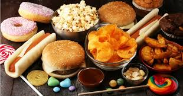
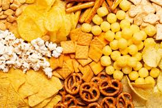
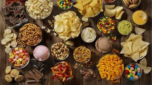

Conhecendo os aimentos: d natural aos industrializados
Os alimentos processados são aqueles que passam por modificações na indústria para aumentar a duração ou melhorar o sabor. Eles recebem ingredientes como sal, açúcar e óleo. Alguns exemplos são pão, queijo, milho em conserva, iogurte e molho de tomate. Apesar de serem práticos, devem ser consumidos com moderação para manter uma alimentação saudável.


